Machine Translation#
Source. Jurafsky. Chapter 26
Source: Human Auditory Range
Machine Translation (MT) is the task of automatically converting one natural language into another, preserving the meaning of the input text, and producing fluent text in the output language (NLP Stanford Grooup)
History#
Machine Translation (MT) was one of the first applications envisaged for computers
First demonstrated by IBM in 1954 with a basic word-for-word translation system
Warren Weaver (1949): I have a text in front of me which is written in Russian but I am going to pretend that it is really written in English and that it has been coded in some strange symbols. All I need to do is strip off the code in order to retrieve the information contained in the text. Adapted from Stephen Clark Slides. Machine Translation. 2022. Link
Chalengess#
Q1. Why Machine Tranlation is hard?
Word order
Word sense
Pronouns
Tense
Idioms
Word Orders#
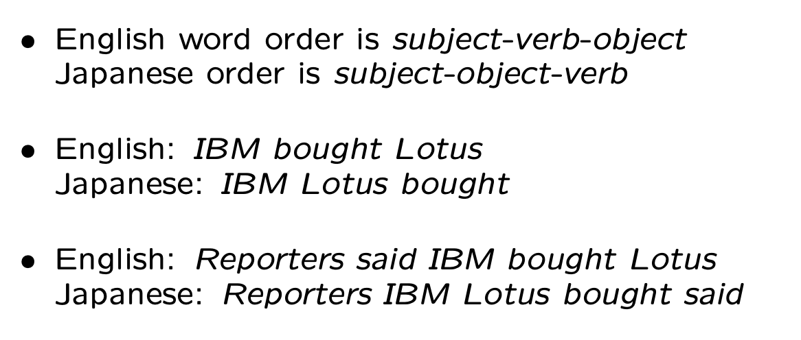
Word Sense Ambiguity#
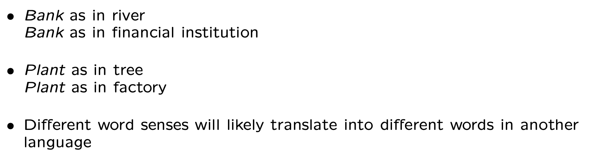
Correference#
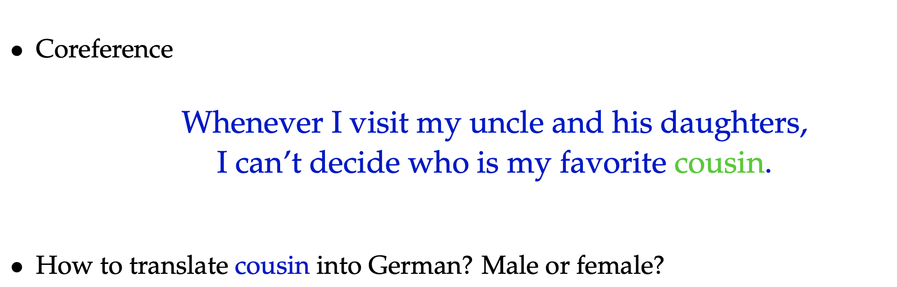
Pronouns#
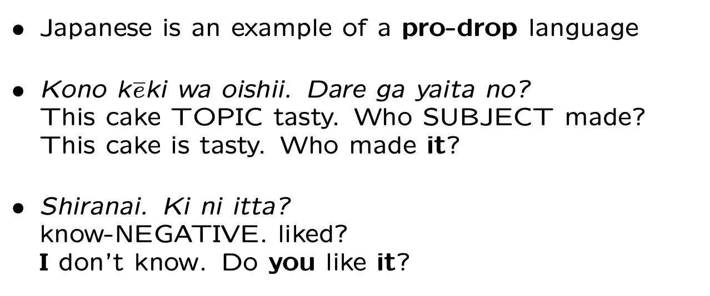
Q2. Do you know any other pro-drop language? How some languages encode information when the personal pronoun is omitted?
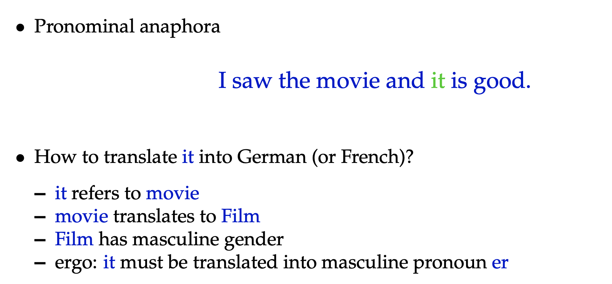
Q3. Use Google translate for I saw the movie and it is good. Does your translation is correct for it? Copy the translation and translate it back to English.
Different Tenses#
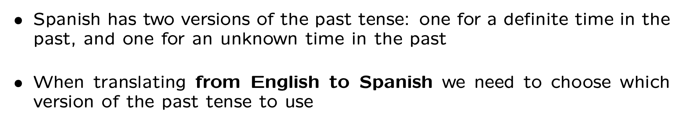
Idioms#
Q4. Use Google translate and find a translation in aanotherr language for spill the beans
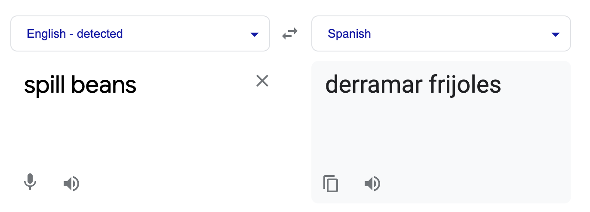
Approaches#
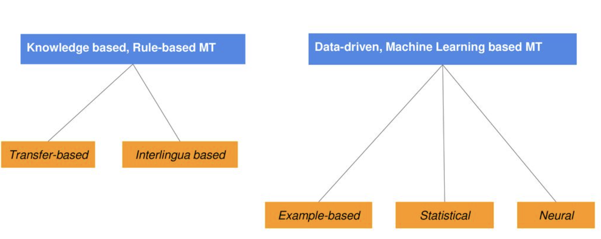
Rule-Based Translation#
Classical machine translation methods often involve rules for converting text in the source language to the target language. The rules are often developed by linguists and may operate at the lexical, syntactic, or semantic level. This focus on rules gives the name to this area of study: Rule-based Machine Translation, or RBMT.
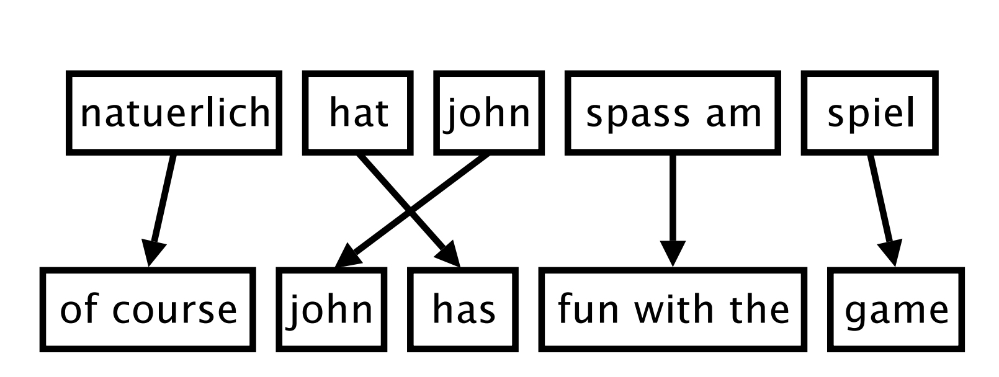
Foreign input is segmented in phrases
Each phrase is translated into English
Phrases are reordered
Note
The key limitations of the classical machine translation approaches are both the expertise required to develop the rules, and the vast number of rules and exceptions required.
Statistical Machine Translation#
Statistical machine translation, or SMT for short, is the use of statistical models that learn to translate text from a source language to a target language gives a large corpus of examples.
Find most probable English sentence given a foreign language sentence
Automatically align words and phrases within sentence pairs in a parallel corpus
Probabilities are determined automatically by training a statistical model using the parallel corpus
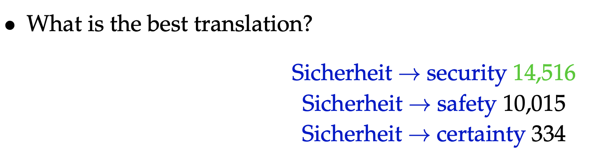
Presently, SMT is extraordinary for basic translation, however its most noteworthy disadvantage is that it does not factor in context, which implies translation can regularly be wrong or you can say, do not expect great quality translation. There are several types of statistical-based machine translation models which are: Hierarchical phrase-based translation, Syntax-based translation, Phrase-based translation, Word-based translation.
Neural Machine Translation#
Neural machine translation, or NMT for short, is the use of neural network models to learn a statistical model for machine translation.
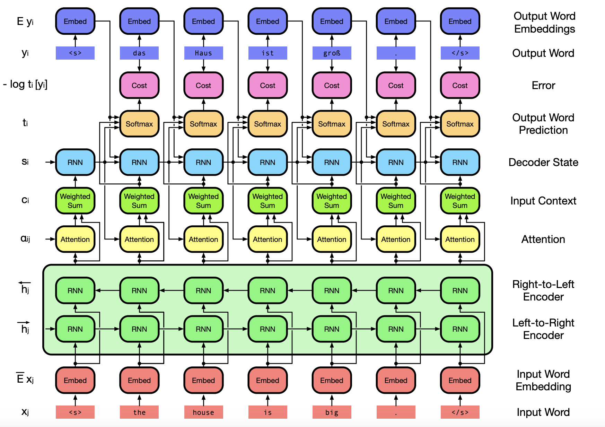
Challenges#
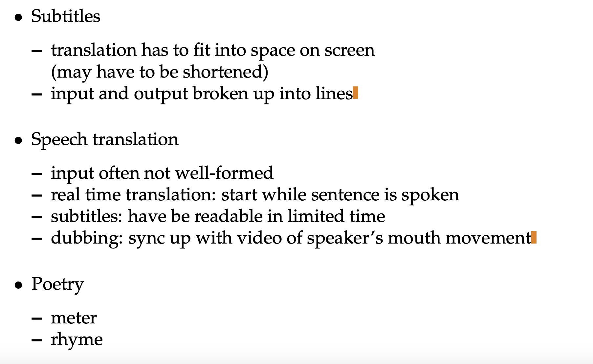
Biases#
Google Translate is the world’s most popular web translation platform, but one Stanford University researcher says it doesn’t really understand sex and gender. Londa Schiebinger, who runs Stanford’s Gendered Innovations project, says Google’s choice of source databases causes a statistical bias toward male nouns and verbs in translation https://www.fastcompany.com/3010223/google-translates-gender-problem-and-bing-translates-and-systrans
In a peer-reviewed case study published in 2013, Schiebinger illustrated that Google Translate has a tendency to turn gender-neutral English words (such as the, or occupational names such as professor and doctor) into the male form in other languages once the word is translated. However, certain gender-neutral English words are translated into the female form … but only when they comply with certain gender stereotypes.
For instance, the gender-neutral English terms a defendant and a nurse translate into the German as ein Angeklagter and eine Krankenschwester. Defendant translates as male, but nurse auto-translates as female.
users discovered that translating “Men are men, and men should clean the kitchen” into German became “Männer sind Männer, und Frauen sollten die Küche sauber”–which means “Men are men and women should clean the kitchen.” Another German-language Google Translate user found job bias in multiple languages–the gender-netural English language terms French teacher, nursery teacher, and cooking teacher all showed up in Google Translate’s French and German editions in the feminine form, while engineer, doctor, journalist, and president were translated into the male form.
Bias and discrimination have appeared time and again in various technological forms. A pressing issue is the discrimination found in many of the translation applications in use today, as Google Translate alone now serves roughly 200 million people daily. https://www.forbes.com/sites/forbesbusinesscouncil/2021/03/01/avoiding-bias-and-discrimination-in-machine-translation/?sh=2c4bea6146a7